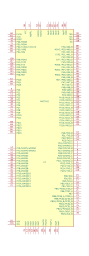
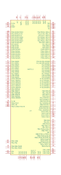

<table>
<tr>
<th>Symbol</th>
<th>Description</th>
</tr>
<tr>
<td><br>MAC7101</td><td>Description: Automotive ARM7TDMI-S-based Microcontroller, LQFP-144<br>Keys: ARM7TDMI-S MCU<br>Datasheet: <a href="https://www.nxp.com/docs/en/data-sheet/MAC7100EC.pdf">https://www.nxp.com/docs/en/data-sheet/MAC7100EC.pdf</a></td>
</tr>
<tr>
<td><br>MAC7111</td><td>Description: Automotive ARM7TDMI-S-based Microcontroller, LQFP-144<br>Keys: ARM7TDMI-S MCU<br>Datasheet: <a href="https://www.nxp.com/docs/en/data-sheet/MAC7100EC.pdf">https://www.nxp.com/docs/en/data-sheet/MAC7100EC.pdf</a></td>
</tr>
</table>
